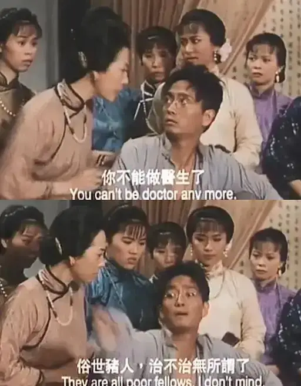
最近发生了很多事，也许很多人还没有意识到，我们正在经历时代的变革。
就像岳飞被十三道金牌召回后赐死，大时代的步伐下，个体的努力和挣扎总是充满了悲凉和无奈。
但是，也正是在这波涛汹涌的漩涡里，我们会看到更多的真和纯粹。
虽然结局是悲壮的，但更多眼不能见、难以评估的精神力量已经随风飘散在各个角落。
我也不免“触景生情”，今天向大家推荐一部港片《南海十三郎》。
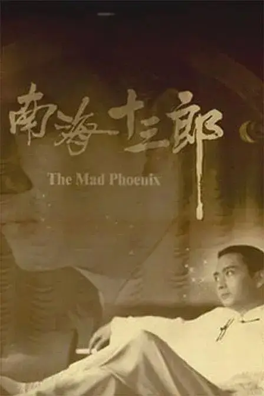
豆瓣9.2。
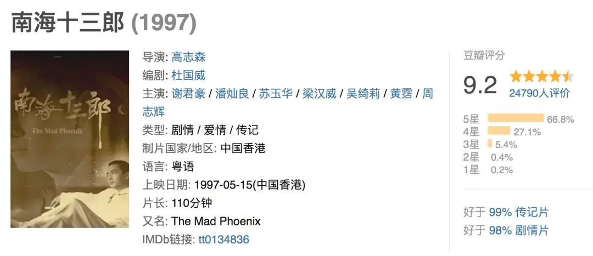
1997年，主演谢君豪击败《春光乍现》里的张国荣和梁朝伟，拿下金马影帝。
本片根据名粤剧编曲名家南海十三郎的生平进行改编，讲述了这位编剧天才身处时代变革下离奇坎坷的一生。

-01- 天才
南海十三郎，原名江誉球，出生在1909年。
父亲是江孔殷，晚清最后一届科举进士，师从康有为，曾参与公车上书，是当时广州重要的政治人物。
江誉球为家中第十三子，因此得名南海十三郎。
南海十三郎天资聪慧，从小就在粤剧中浸淫，对戏剧艺术有着较高的悟性和鉴赏水平。
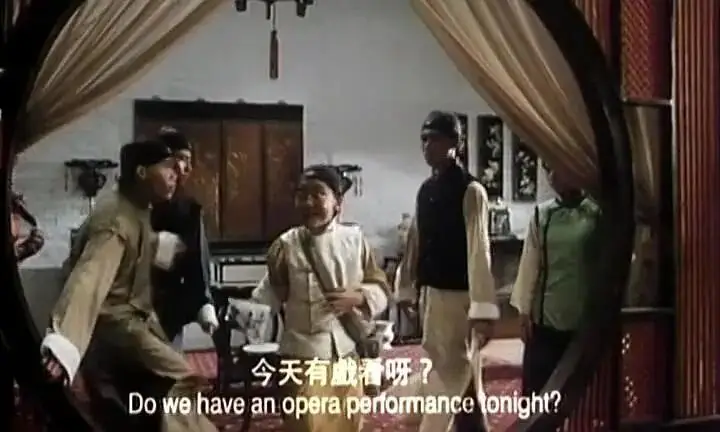
1930年代，南海十三郎考入香港大学医科。
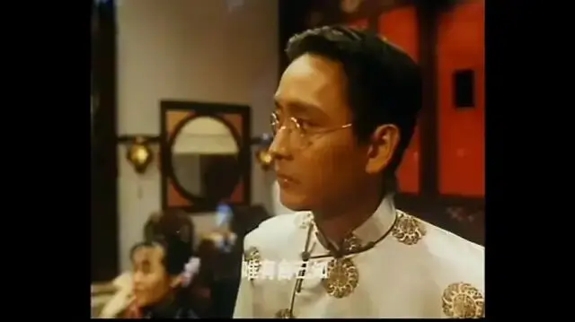
他本应在救死扶伤的路上继续发展，直到遇到了自己心仪的女孩。
后来那个女孩离开香港回了上海，南海十三郎为了追求她，抛弃学业和家庭只身来到上海飘了两年。
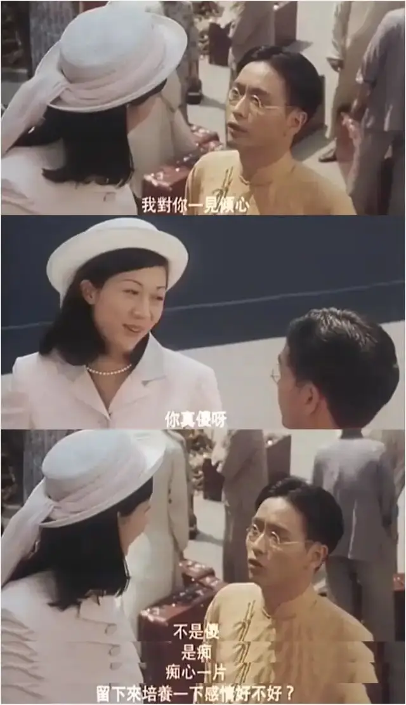
可惜，这段爱情无疾而终，南海十三郎最后落寞地回到了香港。
这次失恋对南海十三郎打击很大，但却给了他创作戏剧的灵感和动力。
后来，他的才华被当时粤剧名家薛觉先发现，南海十三郎便成为了薛觉先的御用编剧。
他们的合作红极一时，场场爆满。
当时，只有二十多岁的南海三十郎灵感像泉源一样爆发，各种情节、金句、曲子随口而出。
他可以同时创作三个剧本，但几个人同时记谱却都跟不上他的思路。
南海三十郎也因此变得越来越恃才傲物，遭到很多人的反感。
可他实在是太有才华，身边的人又不得不在他面前忍气吞声。
直到，一个叫做唐涤生的年轻人出现在他的面前，他仰慕十三郎，热爱戏剧艺术，能够很快地跟上十三郎的思路。
十三郎问他，为什么想要坚持成为一名编剧。
唐涤生告诉十三郎：“黄金股票、世界大事都只是过眼烟云，可是一个好剧本，五十年一百年，依然有人欣赏，就算我死了，我的名字我的戏，没有人会忘记，这就叫做文章有价。”
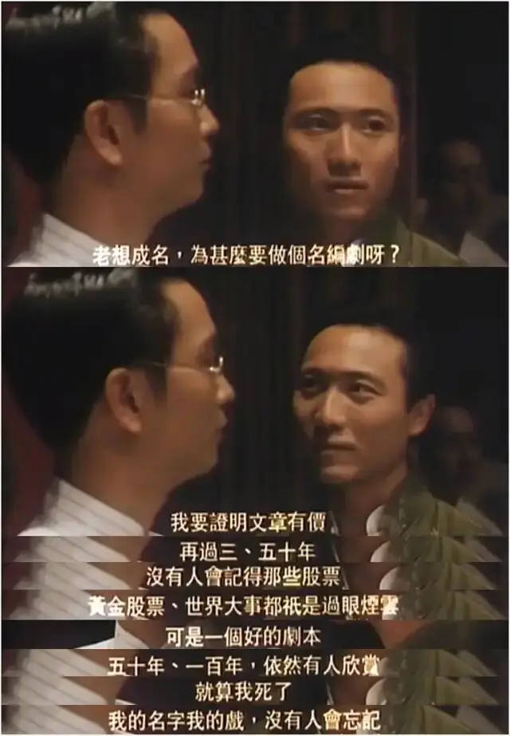
虽没有明说，唐涤生的潜力和志气感动了十三郎。
从此，两人亦师亦友，互为知己。
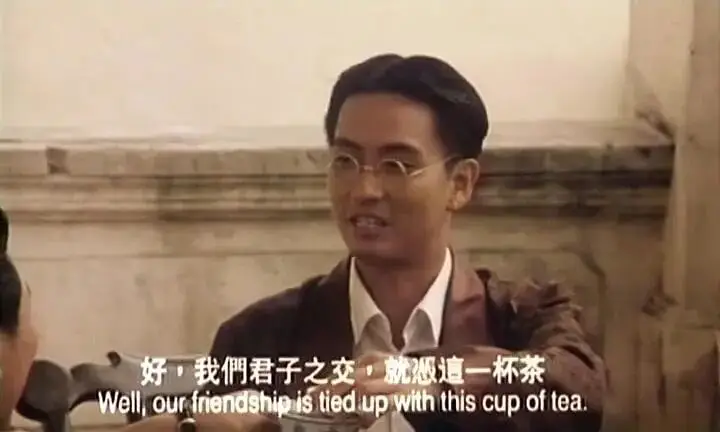
-02- 疯子
1940年，大陆正在经历八年抗战。
南海十三郎决定从香港回到广州，通过创作抗战戏剧来鼓舞士气。
当时唐涤生打算跟着恩师一起北上，但却被南海十三郎一顿臭骂。
最终，唐涤生负气离开十三郎，身边的朋友非常不理解十三郎，唐涤生不是你的爱徒么？
十三郎望着渐渐远去的唐涤生的背影，告诉朋友“学我者生，像我者死”。
原来十三郎是想要通过狠话让唐涤生留在香港继续发展，同时也可以逼着他进行更独立的思考和创作。
随后，十三郎便投入救亡粤剧团”，担任编剧。
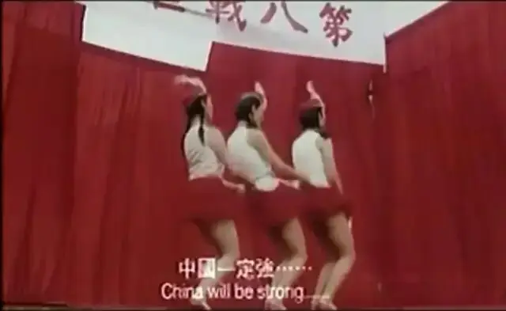
在军营里，面对一些低俗肉欲的作品，十三郎眼里容不下沙，直接破口大骂：做戏就像是做人，戏剧是要其实人生一条正确的道路，我的戏全是导人向善，教人有始有终的顶天立地...
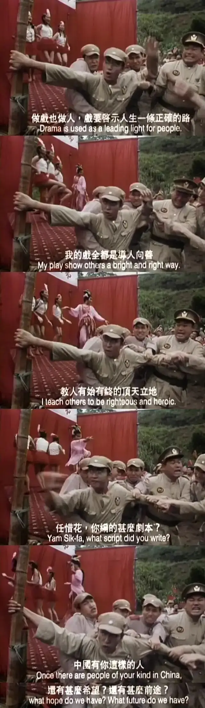
不就是个戏剧么，十三郎的偏执让很多人难以理解。
渐渐地，十三郎的标签里，除了天才编剧之外，还多了自大狂和神经病的标签。
抗战胜利后，南海十三郎回到香港。
他经常对人说：“士可死，志不可屈“。
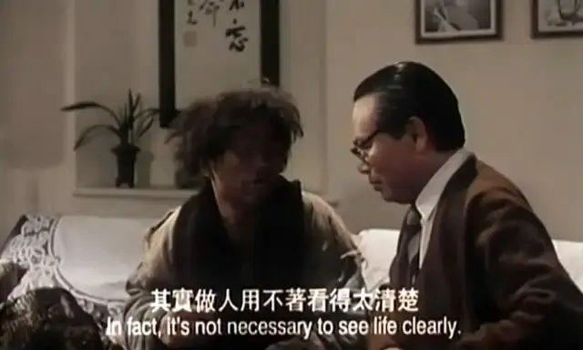
十三郎之所以这么说，是因为他觉得当时香港很多戏剧过于媚俗，有伤风化。
南海十三郎也不顾及一些戏剧圈、电影圈大佬的面子，直接劈头盖脸的批判。
终至没有人愿意再找他合作，都觉得他是个神经病。
十三郎也因此落魄街头，被人当做傻子、疯子、乞丐来看。
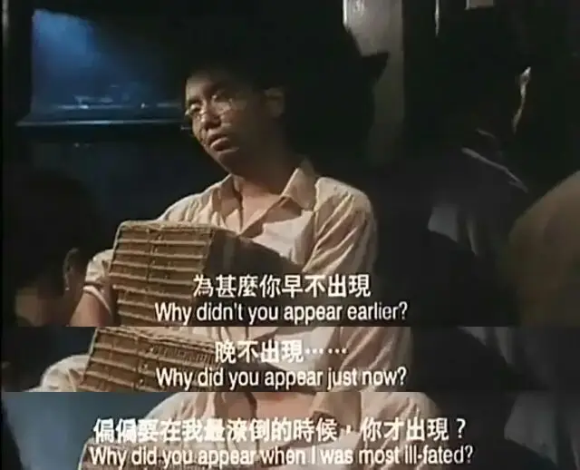
新中国建立后，家人将他带回广州，可十三郎依旧我行我素、”疯疯癫癫“，经常说一些大逆不道的大实话。
家人害怕十三郎这样会惹祸上门，不得不将他再次送到香港。
于是，疯疯癫癫的十三郎再次出现在香港街头。
直到有一天，一个人在他面前唱起：
”我再见恩师心中百般痛，仿似宝剑泥水尘半封，昔日壮志与才气全告终，江中雪，泪影两朦胧。辜负伯牙琴，你莫个难自控，知音再觅寻，俗世才未众……“
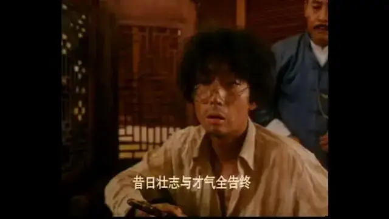
这个人便是昔日知己唐涤生，他如今果然成为了一代粤剧名家。
也只有他能真正明白恩师的傲骨。
这段师徒相认的场景非常动人，唐涤生紧紧握着十三郎的手，将第二天自己演出的门票放在恩师手中。
十三郎浑浊的眼睛又一次变得清澈和充满希望。
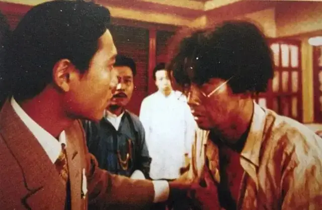
第二天，一身恶臭的十三郎终于里里外外梳洗了一遍，准备奔赴这场只有知己才会懂的宴会。
可迎接他的却是唐涤生的死讯，就在演出当晚，唐涤生突发脑溢血，死在戏院，年仅四十二岁。
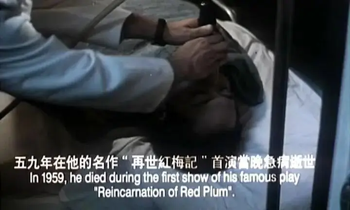
十三郎唯一的知己就这样溘然长逝，十三郎深受打击，变得更加”神志不清“。
而对他最致命的打击是后来父亲的死讯。
1951年，十三郎父亲失足摔成瘫痪，一直住在医院。
之后，遇上三反五反，南海农民追索“逃亡地主”，到医院强行用箩筐将十三郎父亲抬返乡里，准备对其进行批斗。
十三郎的父亲在监狱中瞑目不语，一度绝食，四十一日而终。
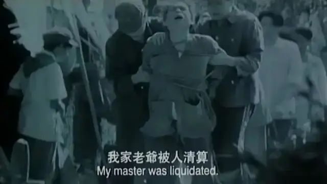
从此，十三郎再无牵挂，疯癫半世直至暴尸街头。
心声泪影女儿香，燕归何处觅残塘。
红绡夜盗寒江雪，痴人正是十三郎。
-03- 永不妥协
出生清末，在乱世中成名，30岁便到事业巅峰，留下几十部杰作。
之后，整个下半生都在疯癫和流浪中度过，最后光着脚死在路边。
一代粤剧名家，何以至此。
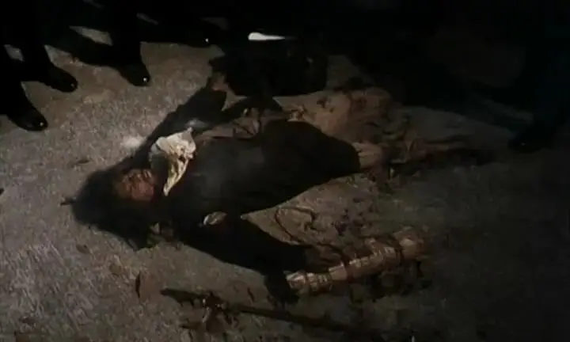
电影中给出了答案。
因为南海十三郎是真正的天才，而天才是永远不会和世俗妥协的。
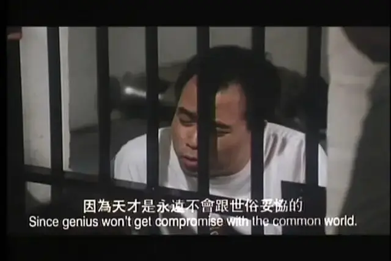
对于我们这样的儒家社会，恃才傲物的南海十三郎自然会让我们觉得不舒服。
他一点也不低调，同时一点也不忍气吞声。
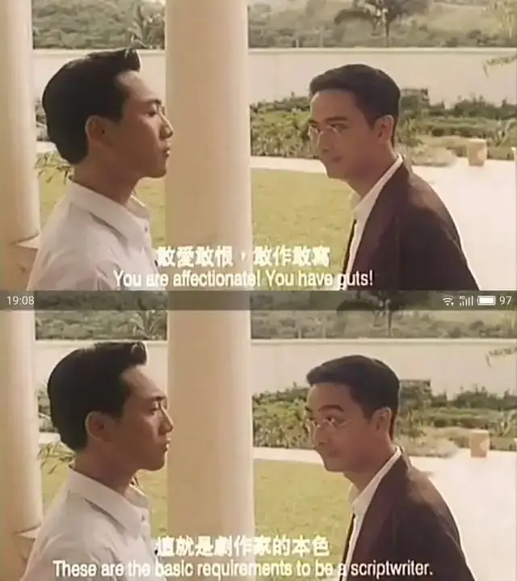
面对香港戏剧和电影的高度世俗和商业化，南海十三郎敢怒敢言。
就算得罪了所有人，南海十三郎宁愿沦落街头，也不愿意屈膝。
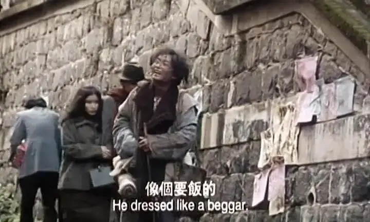
这是作为一个有很高追求的艺术家的风骨，是对无下限的商业时代的对抗。
这份精神也是香港电影人的心声。
香港过去作为一个难民城市，承载了太多人的希望和明天。
很多人要在这个弹丸之地立足，必须要拼尽全力才得以生存。
对于电影行业也是如此，只要有票房，香港就没有不敢拍的片子。
三级片、cult电影、恐怖片，世界范围内不论是猎奇还是满足私欲，凡是有的种类香港电影都可以看到。
有太多的女星是通过三级片出道，也有太多的电影人是从一场又一场的龙套中跑出来的。
而毫无尊严的入行方式和一路的摸爬滚打给香港造就了一大批老戏骨，他们有着丰富的人生阅历，有着顽强的生存意识，演什么就像什么。
高度商业化的氛围成就了香港，但同时也成为了香港电影的痛。
在香港，过强的作者表达以及过于雅气的艺术很难生存。
很多人是怀着电影梦想进入这个行当，但骨干的现实往往将这份理想逼成了一份赚钱的生意。
香港电影人的艺术追求只能在夹缝里生存。
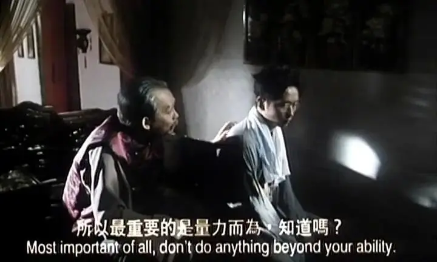
这部作品是借着一个说书人的口，讲述了南海十三郎的故事。
电影最后，吃瓜群众问这个说书人，南海十三郎有这么传奇么，你怎么会知道的这么详细。
说书人叹了一口气，自嘲地说”这只不过是一个潦倒编剧在讲另一个潦倒编剧的故事“。
原来这是个双层故事，已经远去的南海十三郎不被人理解，但依旧鼓舞着后来的追随者。
当电影最后出现”献给全港编剧共勉“时，我想这会让很多人尤其是香港电影的从业人员心中不禁为之一颤，原来还有人懂我们。
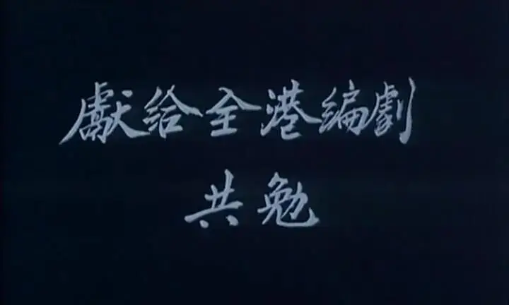
南海十三郎的疯癫，是一种姿态，这种姿态不仅表达了他的艺术追求，更是他对荒谬时代的对抗。
他在香港的遭遇，他父亲在大陆的遭遇，吃人不吐骨头的商业和政治，这些荒谬之事他看的很清楚。
但什么都看得那么清楚，那是很痛苦的。
所以，南海十三郎成为了癫狂之人。
据说，他曾打电话999报警称被打劫。
警方派员到场，当时十三郎住在床位，他对到场警察说被人偷去一双鞋。
警察问他知不知道是谁偷了，他说知道，是两个大家都认识的人，但是没有人敢逮捕他们。
警察问，究竟是谁。
十三郎告诉警察，左边鞋是毛sir偷的，右边鞋是蒋sir偷的。
鞋子被偷了，自己左右都没法走。
个中滋味，大家可以自行体会。
本片因为此说法过于敏感，改为左边鞋是日本人偷的，右边鞋是英国人偷的。
国语版父亲被批斗的片段也被删减。
尽管这样，《南海十三郎》背后的理想主义和风骨依旧夺目。
记得我第一次看完时，是凌晨一点，当时我兴奋不已。
因为这部作品不仅是对摸爬滚打香港电影人的一份献礼。
更是一份伟大的宣言，作为一个电影人，若身处邪恶的时代，宁愿疯癫，也不与虚假为伍，不与世俗妥协。
为你点一首歌
滑动下方
查看完整诗词
▼
作曲 : 中島みゆき，
作词 : 中島みゆき，
世の中はいつも変わっているから，
世局纷流不断变化，
頑固（がんこ）者だけが悲しい思いをする，
只有顽固之人不愿乐观面对变局，
変わらないものを何かにたとえて，
他们把我们追求的真理看作怪物，
その度崩れちゃそいつのせいにする，
面对失序将一切归罪于它，
シュプレヒコールの波通り過ぎてゆく，
众人的声浪如川流不息，
変わらない夢を流れに求めて，
在这浪潮之中追寻永恒的梦想，
時の流れを止めて変わらない夢を，
为的是和试图阻止时代变化的人，
見たがる者たちと戦うため，
还有对我们的梦想冷眼旁观的人战斗到底，
世の中はとても臆病な猫だから，
这世上总有无可救药的胆小鬼，
他愛のない嘘をいつもついている，
他们散播者毫无仁慈之心可言的谎言，
包帯のような嘘を見破ることで，
但只是拆穿这些如绷带般不堪一击的谎言，
学者は世間を見たような気になる，
那些自诩的学者就标榜自己已经看穿了一切，
シュプレヒコールの波通り過ぎてゆく，
众人的声浪如川流不息，
変わらない夢を流れに求めて，
在这浪潮之中追寻永恒的梦想，
時の流れを止めて変わらない夢を，
为的是和试图阻止时代变化的人，
見たがる者たちと戦うため，
还有对我们的梦想冷眼旁观的人战斗到底，
シュプレヒコールの波通り過ぎてゆく，
众人的声浪如川流不息，
変わらない夢を流れに求めて，
在这浪潮之中追寻永恒的梦想，
時の流れを止めて変わらない夢を，
为的是和试图阻止时代变化的人，
見たがる者たちと戦うため，
还有对我们的梦想冷眼旁观的人战斗到底，
シュプレヒコールの波通り過ぎてゆく，
众人的声浪如川流不息，
変わらない夢を流れに求めて，
在这浪潮之中追寻永恒的梦想，
時の流れを止めて変わらない夢を，
为的是和试图阻止时代变化的人，
見たがる者たちと戦うため，
还有对我们的梦想冷眼旁观的人战斗到底
这里没有挑逗你眼目情欲的小鲜肉
也没有挑动你肉体情欲的段子
更没有膨胀你今生骄傲的鸡血
我们只在乎那些最质朴真诚的作品
在那里我们才能恢复真正的想象力
我们也坚信这才是我们真正需要的

ID:Six_hundred_hits
长按二维码，一键关注
【六百击】
电影评论
尽情分享朋友圈

微信二维码打赏通道